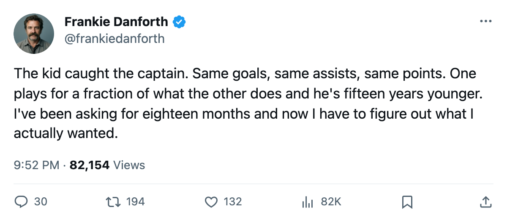
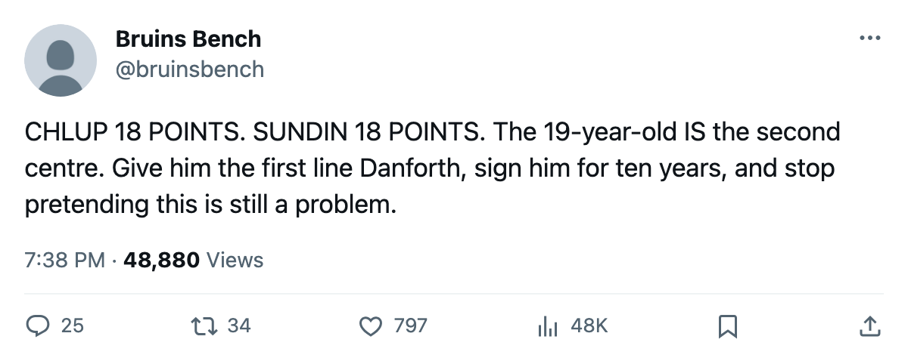

DANFORTH: Code Yellow, the 19-year-old caught the captain, and a formula this thin
Chlup and Sundin sit tied at 18 points through 25 games. Toronto is 6-0 when scoring 4 or more, and 1-3 when they don't.
 Frankie DanforthColumnist · Queen City Telegram
Frankie DanforthColumnist · Queen City Telegram
Code Yellow

 Mats Sundin92 and Petr Chlup87 both have 18 points through 25 games. I wrote on November 27 that they were tied at 16 through 22 and that I wasn't ready to stop asking for a true second centre. Three games later, they're still tied. The 19-year-old has caught the captain, and the numbers underneath the totals don't match.
Mats Sundin92 and Petr Chlup87 both have 18 points through 25 games. I wrote on November 27 that they were tied at 16 through 22 and that I wasn't ready to stop asking for a true second centre. Three games later, they're still tied. The 19-year-old has caught the captain, and the numbers underneath the totals don't match.
Petr Chlup centres the 3rd line at even strength and the 1st penalty-kill unit. Mats Sundin centres the 1st line and the 1st power play. Same production, different job. Same age gap: 15 years. Same salary gap.
| player | age | GP | G | A | P | MPG | salary | years left |
|---|---|---|---|---|---|---|---|---|
| Petr Chlup | 19 | 25 | 6 | 12 | 18 | 20.6 | $2.34M | 1 |
| Mats Sundin | 34 | 25 | 6 | 12 | 18 | 23.8 | $8.40M | 4 |
The kid is on an entry-level deal with 1 contract year left. The captain has 4 years and a no-trade I assume, because who lets Sundin walk. I don't need to finish that sentence.
Four goals or nothing
In the last 10 games,  Toronto Maple Leafs is 6-0 when it scores 4 or more. It is 1-3 when it scores fewer. The lone win below 4 came in overtime. The November 30 game against
Toronto Maple Leafs is 6-0 when it scores 4 or more. It is 1-3 when it scores fewer. The lone win below 4 came in overtime. The November 30 game against  Buffalo Sabres, where Toronto scored 1, ended 1-5. Worst loss of the season.
Buffalo Sabres, where Toronto scored 1, ended 1-5. Worst loss of the season.
The  Tampa Bay Lightning game on December 3 confirmed the pattern from the winning end: 4 goals for, 3 against, 25 shots on goal against 23. A 4-3 win. Tampa Bay is 4-10 on the road, and Toronto is 7-1 away. The matchup favoured the home side by any measure except the one that mattered, which was scoring 4. They did. They won.
Tampa Bay Lightning game on December 3 confirmed the pattern from the winning end: 4 goals for, 3 against, 25 shots on goal against 23. A 4-3 win. Tampa Bay is 4-10 on the road, and Toronto is 7-1 away. The matchup favoured the home side by any measure except the one that mattered, which was scoring 4. They did. They won.
I own 2 misses. Both Buffalo predictions from November 30 were wrong. Toronto earned 0 points and lost 1-5. I said so on December 1 and I'm not rewriting it. The Tampa Bay Lightning call, at least 1 point on December 3, landed.
Boston owns the series and 2 games in hand
Toronto Maple Leafs leads the Northeast at 38 points in 25 games.  Boston Bruins has 31 in 23. That's 7 points of cushion and 2 games in hand for the Bruins, who have beaten Toronto twice this season, both in regulation. The next meeting isn't until January 7.
Boston Bruins has 31 in 23. That's 7 points of cushion and 2 games in hand for the Bruins, who have beaten Toronto twice this season, both in regulation. The next meeting isn't until January 7.
Boston sits 9-3 on the road. That's the team closing the gap while Toronto tries to keep a formula alive that requires 4 goals to win. I don't think 4 goals a night is sustainable against good goaltending, and I think 10 straight games of it proves that teams aren't adjusting yet, not that they won't.
Code Yellow
The lead is real. The 19-year-old matching the captain's production is real, and it's the answer I've been asking for since 2004. But the scoring formula is four or nothing, and a team built on a four-goal floor is one bad night from a slide. The Tampa Bay game showed how thin the margin is when the 4 goals come against a 4-10 road club. I'll take the wins. I just won't call it a style.

